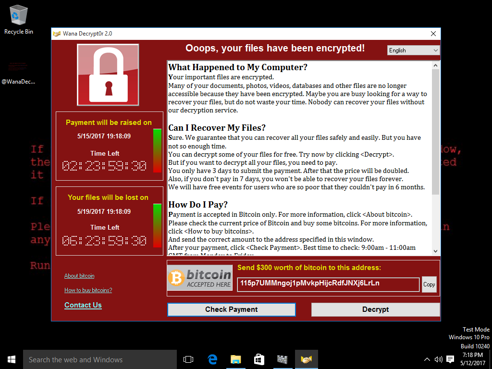

12.05.2017 более чем 75000 компьютеров на Windows по всему миру пострадали от атаки червя-вымогателя, известного как WannaCry, WCry или WanaCrypt0r 2.0.
WannaCry стал одним из первых червей-вымогателей. Данное зловредное программное обеспечение не только работает как вымогатель, но и пытается инфицировать как можно больше систем в сети, сканируя сеть, где он оказался, и заражая соседние компьютеры.
Данную атаку очень тяжело обнаружить традиционными системами безопасности, потому что он скрытно использует недавно обнаруженную уязвимость в операционных системах Microsoft. После проникновения в систему WannaCry шифрует все локальные диски и сетевые папки. Именно функционал компьютерного червя делают данную атаку такой опасной для компаний и частных пользователей, потому что распространение его происходит через два источника – зараженное вложение в электронной почте и распространение как компьютерный червь.
Киберпреступники специально выбирали жертв для атаки из компаний, которые не могут простить себе простоя и, вероятнее всего, предпочтут быстро заплатить выкуп: телекоммуникационные, логистические и энергетические компании, общественный транспорт, больницы, школы и университеты. Злоумышленники не побоялись атаковать даже подразделения МВД России.
Краткий список компаний-жертв атаки червя-вымогателя:
Червь-вымогатель WannaCry проникает в частные и корпоративные сети с помощью рассылок нежелательной почты, которая содержит вредоносные вложения, которые, в свою очередь, содержат макрос или ссылку на вредоносную программу, начинающую первоначальное заражение. И хотя на текущий момент нет примеров таких писем, все аналитики, включая экспертов Microsoft, сходятся в том, что именно таким образом происходило заражение на первом этапе.
Перед началом своей активности, WannaCry проверяет существование специального домена «выключателя» и если он находит его, то программа прекращает свою работу. Первая версия червя была остановлена именно путем активации такого домена «выключателя». Если же «выключатель» не существует, то червь начинает загрузку своих модулей, регистрирует сервис, сканирует случайные IP-адреса по порту 445, проверяет наличие бекдора DOUBLEPULSAR и подготавливает пакет для внедрения.
Процесс подготовки пакета для внедрения реализован в виде функции, которую мы называем initNetworkInjectingExecutables в псевдокоде ниже. initNetworkInjectingExecutables читает DLL-загрузчик из червя, создает пакет для внедрения, добавляет к нему червя и пересылает на скомпрометированный системный порт. На этой системе загрузчик получает контроль через бекдор DOUBLEPULSAR и запускает червь.
Бэкдор, тайный вход — дефект алгоритма, который намеренно встраивается в него разработчиком и позволяет получить несанкционированный доступ к данным или удалённому управлению операционной системой и компьютером в целом.
При использовании ETERNALBLUE происходит внедрение DOUBLEPULSAR в систему и DOUBLEPULSAR использует уязвимость драйвера режима ядра ОС SRV.SYS (файловый сервер SMB), которая позволяет встроить и выполнить код опасной DLL в любом процессе на скомпрометированной системе.
После установки вредоносной программы, она начинает действовать как программа-червь, сканируя сеть и подключаясь по порту 445 к другим компьютерам для обнаружения работающих бекдоров DOUBLEPULSAR, передает зараженные файлы, которые запускают процесс на новом компьютере, распространяя инфекцию подобно пожару в лесу. Если же атакованная система не содержит бекдора DOUBLEPULSAR, то червь сначала устанавливает его через эксплоит ETERNALBLUE, и процесс продолжается.
эксплойт EternalBlue позволяет отправить специальный пакет по протоколу SMB v1, после чего тот кто отправил получает доступ к системе и может запустить на ней свой код.
SMB (Server Message Block) — это сетевой протокол прикладного уровня для удалённого доступа к файлам, принтерам и другим сетевым ресурсам, а также для межпроцессного взаимодействия. Первая версия протокола, также известная как Common Internet File System (CIFS) (Единая файловая система Интернета). В настоящее время SMB связан главным образом с операционными системами Microsoft Windows, где используется для реализации «Сети Microsoft Windows» (Microsoft Windows Network) и «Совместного использования файлов и принтеров» (File and Printer Sharing).
DoublePulsar — бэкдор, разработанный группировкой Equation Group и опубликованный хакерской группой The Shadow Brokers в начале 2017 года.
Зловредное программное обеспечение на инфицированной системе удаляет все теневые копии VSS всеми доступными способами:
Vssadmin delete shadows /all /quiet
Wmic shadowcopy delete
Wbadmin delete catalog –quiet
Так же отключается консоль восстановления на скомпрометированной системе:
Bcdedit /set {default} bootstatuspolicy ignoreallfailures
Bcdedit /set {default} recoveryenabled no
Вредоносная часть червя запускает по расписанию программу-шифровальщик tasksche.exe, которую она распаковывает из загрузочного пакета.
Шифровальщик сканирует все диски и сетевые папки на системе, ищет файлы с расширениями из внутренней таблицы и шифрует их алгоритмом RSA с 2048-битным ключом.
В новой папке с именем Tor/ он создает tor.exe и сопутствующие файлы. Туда же копируются два файла: taskdl.exe и taskse.exe. Последняя программа удаляет следы работы червя и далее запускает @wanadecryptor@.exe. Данная программа показывает заставку с требование выкупа и осуществляет связь через сеть Tor.
Шифровальщик шифрует файлы более чем 160 различных расширений:
.doc, .docx, .xls, .xlsx, .ppt, .pptx, .pst, .ost, .msg, .eml, .vsd, .vsdx, .txt, .csv, .rtf, .123, .wks, .wk1, .pdf, .dwg, .onetoc2, .snt, .jpeg, .jpg, .docb, .docm, .dot, .dotm, .dotx, .xlsm, .xlsb, .xlw, .xlt, .xlm, .xlc, .xltx, .xltm, .pptm, .pot, .pps, .ppsm, .ppsx, .ppam, .potx, .potm, .edb, .hwp, .602, .sxi, .sti, .sldx, .sldm, .sldm, .vdi, .vmdk, .vmx, .gpg, .aes, .ARC, .PAQ, .bz2, .tbk, .bak, .tar, .tgz, .gz, .7z, .rar, .zip, .backup, .iso, .vcd, .bmp, .png, .gif, .raw, .cgm, .tif, .tiff, .nef, .psd, .ai, .svg, .djvu, .m4u, .m3u, .mid, .wma, .flv, .3g2, .mkv, .3gp, .mp4, .mov, .avi, .asf, .mpeg, .vob, .mpg, .wmv, .fla, .swf, .wav, .mp3, .sh, .class, .jar, .java, .rb, .asp, .php, .jsp, .brd, .sch, .dch, .dip, .pl, .vb, .vbs, .ps1, .bat, .cmd, .js, .asm, .h, .pas, .cpp, .c, .cs, .suo, .sln, .ldf, .mdf, .ibd, .myi, .myd, .frm, .odb, .dbf, .db, .mdb, .accdb, .sql, .sqlitedb, .sqlite3, .asc, .lay6, .lay, .mml, .sxm, .otg, .odg, .uop, .std, .sxd, .otp, .odp, .wb2, .slk, .dif, .stc, .sxc, .ots, .ods, .3dm, .max, .3ds, .uot, .stw, .sxw, .ott, .odt, .pem, .p12, .csr, .crt, .key, .pfx, .der
Если система не защищена пользователь увидит неприятное сообщение:
